pacman::p_load(sf, sfdep, tmap, tidyverse, corrplot)Take-home Exercise 2: Discovering impacts of COVID-19 on Thailand tourism economy at province level using spatial and spatio-temporal statistics
1 Overview
1.1 Setting the scene
Tourism is one of Thailand’s largest industries, contributing to around 20% to the gross domestic product (GDP). In 2019, it generated 90 billion USD, but due to COVID-19, this revenue has dropped to 24 billion in 2020.
Using the statistics obtained from The Official Ministry of Tourism and Sports Statistics of Thailand, we can see that the tourism revenue has gradually recovery since September 2021. It is notable that the tourism economy in Thailand is largely concentrated in certain provinces.
1.2 Objectives
This analysis aims to deliver 2 objectives:
Examine if the key indicators of Thailand’s tourism economy are independent from space and space and time using appropriate statistical testing.
If the key indicators are spatial and spatio-temporal dependent, then detection of clusters and outliers, and emerging hot spots/cold spots will be carried out to further understand the association.
1.3 The Data
2 datasets will be used for the purpose of this analysis:
Thailand Domestic Tourism Statistics at Kaggle. We will use the updated version 2 of the data set.
Thailand - Subnational Administrative Boundaries at HDX. The boundary dataset at province level (level 1) will be used.
2 Set up R environment
2.1 Import R packages
The below code chunk uses p_load() of pacman package to install and load relevant packages into R environment.
3 Import Geospatial and Aspatial Data
3.1 Import Thailand province boundaries
The below code chunk uses st_read() to imports the administrative boundaries at province level of Thailand to thailand_raw sf dataframe.
thailand_raw = st_read(dsn = "data/rawdata",layer = "tha_admbnda_adm1_rtsd_20220121")Reading layer `tha_admbnda_adm1_rtsd_20220121' from data source
`C:\thuphuong1110\ISSS626-GAA\Take-home_Ex\Take-home_Ex02\data\rawdata'
using driver `ESRI Shapefile'
Simple feature collection with 77 features and 16 fields
Geometry type: MULTIPOLYGON
Dimension: XY
Bounding box: xmin: 97.34336 ymin: 5.613038 xmax: 105.637 ymax: 20.46507
Geodetic CRS: WGS 84Next we cast the dataframe from MULTIPOLYGON to POLYGON geometry type using the below code chunk to facilitate future spatial neighbor and spatial weights calculation. For provinces with multiple polygons (small islands), only the polygon with the largest area will be kept.
thailand <- thailand_raw |>
st_cast("POLYGON") |>
mutate(area = st_area(geometry)) |> # Calculate the area of each polygon
group_by(ADM1_EN) |> # Group by province
filter(area == max(area)) |> # Keep the record with the largest area for each province
ungroup() |> # Ungroup after filtering
select(c("ADM1_EN"))Warning in st_cast.sf(thailand_raw, "POLYGON"): repeating attributes for all
sub-geometries for which they may not be constant# change column name
colnames(thailand)[1] = "province_eng"We check if the data contain any duplicate using below code chunk. The output returns 0 meaning there is no duplicate.
anyDuplicated(thailand)[1] 0Next we use tmap to plot the thailand sf dataframe and can see all the provinces of Thailand has been plotted properly. For provinces with small islands, only the mainland parts with the largest area are kept.
tm_shape(thailand) +
tm_polygons() +
tm_text("province_eng", size = 0.2)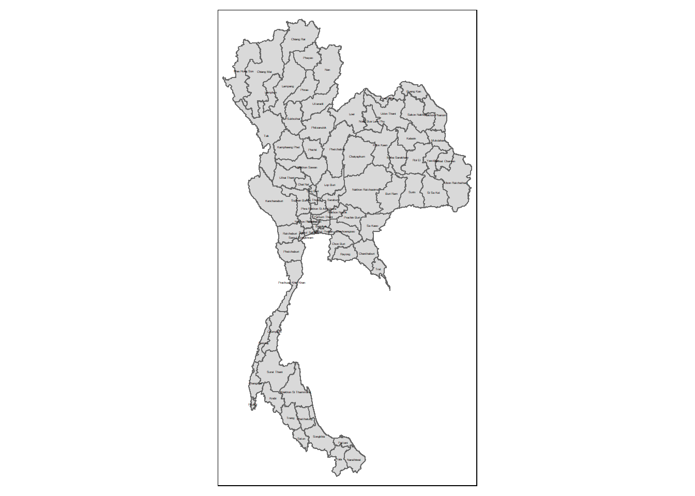
The below code is used to check thailand sf dataframe again, which shows the geometry type is already POLYGON. This sf dataframe will be used to define the province boundaries for the remaining analysis.
thailandSimple feature collection with 77 features and 1 field
Geometry type: POLYGON
Dimension: XY
Bounding box: xmin: 97.34336 ymin: 5.613038 xmax: 105.637 ymax: 20.46507
Geodetic CRS: WGS 84
# A tibble: 77 × 2
province_eng geometry
<chr> <POLYGON [°]>
1 Bangkok ((100.6139 13.95462, 100.6143 13.95442, 100.6149 13…
2 Samut Prakan ((100.7306 13.71713, 100.7307 13.71681, 100.7313 13…
3 Nonthaburi ((100.3415 14.10079, 100.3415 14.10001, 100.3415 14…
4 Pathum Thani ((100.8916 14.24576, 100.8916 14.24365, 100.8916 14…
5 Phra Nakhon Si Ayutthaya ((100.5131 14.6563, 100.5132 14.65629, 100.5135 14.…
6 Ang Thong ((100.3332 14.79853, 100.3334 14.79811, 100.3335 14…
7 Lop Buri ((101.3453 15.75254, 101.3457 15.75224, 101.3466 15…
8 Sing Buri ((100.3691 15.0894, 100.3697 15.0891, 100.3708 15.0…
9 Chai Nat ((100.1199 15.41243, 100.121 15.41234, 100.1229 15.…
10 Saraburi ((101.3994 15.07373, 101.3995 15.07373, 101.3998 15…
# ℹ 67 more rows3.2 Import Domestic Tourism Statistics
The below code chunk read in thailand_domestic_tourism_2019_2023_ver2.csv using read_csv() and remove the columns in Thai language.
tourism_raw = read_csv("data/rawdata/thailand_domestic_tourism_2019_2023_ver2.csv") |>
select(-c("province_thai","region_thai")) # exclude column in Thai languageRows: 30800 Columns: 7
── Column specification ────────────────────────────────────────────────────────
Delimiter: ","
chr (5): province_thai, province_eng, region_thai, region_eng, variable
dbl (1): value
date (1): date
ℹ Use `spec()` to retrieve the full column specification for this data.
ℹ Specify the column types or set `show_col_types = FALSE` to quiet this message.The tourism_raw tible dataframe includes the below columns and variables:
date: The month and year in which the statistics were recorded. The dataset covers the years 2019-2023.
province_eng:The name of the province in English.
region_eng:The name of the region in Thailand to which the province belongs, in English.
value: value of the data being recorded
variables:The 8 type of data being recorded as follows:
ratio_tourist_stay: ratio of tourist stay over-night (total rooms booked/total available rooms)
no_tourist_stay: The number of tourists who stay over-night
no_tourist_all: The total number of domestic tourists who visited the province
no_tourist_thai: The number of Thai tourists who visited the province
no_tourist_foreign: The number of foreign tourists who visited the province
revenue_all: The revenue generated by the tourism industry in the province, in Thai Baht
revenue_thai: The revenue generated by Thai tourists in the province, in Thai Baht
revenue_foreign: The revenue generated by foreign tourists in the province, in Thai Baht
The below code chunks pivots the dataframe from thin format to wide format using pivot_wider() and add in these additional columns:
revenue_per_tourist: revenue generated per tourist (= revenue_all / no_tourist_all)
revenue_per_thai_tourist: revenue generated per Thai tourist (= revenue_thai/no_tourist_thai)
revenue_per_foreign_tourist: revenue generated per foreign tourist (= revenue_foreign/no_tourist_foreign)
foreign_thai_tourist: ratio of foreign tourist to Thai tourist (= no_tourist_foreign/no_tourist_thai)
year_month: derive from
datevalue in YYYYMM format and convert to integer type
tourism <- tourism_raw %>%
pivot_wider(names_from = variable, values_from = value) |>
mutate(revenue_per_tourist = ifelse(no_tourist_all == 0, 0, revenue_all / no_tourist_all)) |>
mutate(revenue_per_thai_tourist = ifelse(no_tourist_thai == 0,0,revenue_thai/no_tourist_thai)) |>
mutate(revenue_per_foreign_tourist = ifelse(no_tourist_foreign == 0,0,revenue_foreign/no_tourist_foreign)) |>
mutate(foreign_thai_tourist = ifelse(no_tourist_thai == 0,0, 100*no_tourist_foreign/no_tourist_thai)) |>
mutate(month_no = month(date)) %>%
mutate(month_fac = month(date,
label = TRUE, abbr = TRUE)) %>%
mutate(year = year(date)) |>
mutate(year_month = as.integer(format(as.Date(date), "%Y%m")))
# View the result
glimpse(tourism)Rows: 3,850
Columns: 19
$ date <date> 2019-01-01, 2019-01-01, 2019-01-01, 2019-…
$ province_eng <chr> "Bangkok", "Lopburi", "Phra Nakhon Si Ayut…
$ region_eng <chr> "central", "central", "central", "central"…
$ ratio_tourist_stay <dbl> 93.37, 61.32, 73.37, 67.33, 79.31, 71.70, …
$ no_tourist_stay <dbl> 3334971, 51858, 117052, 89850, 27141, 1186…
$ no_tourist_all <dbl> 5959075, 268664, 730329, 207236, 79073, 29…
$ no_tourist_thai <dbl> 3534061, 266301, 561553, 201400, 78514, 28…
$ no_tourist_foreign <dbl> 2425014, 2363, 168776, 5836, 559, 11699, 2…
$ revenue_all <dbl> 81926490000, 457240000, 1438730000, 347790…
$ revenue_thai <dbl> 29742580000, 451830000, 1054250000, 336190…
$ revenue_foreign <dbl> 52183910000, 5410000, 384480000, 11600000,…
$ revenue_per_tourist <dbl> 13748.189, 1701.903, 1969.975, 1678.232, 1…
$ revenue_per_thai_tourist <dbl> 8415.978, 1696.689, 1877.383, 1669.265, 12…
$ revenue_per_foreign_tourist <dbl> 21519.014, 2289.463, 2278.049, 1987.663, 1…
$ foreign_thai_tourist <dbl> 68.6183402, 0.8873418, 30.0552219, 2.89771…
$ month_no <dbl> 1, 1, 1, 1, 1, 1, 1, 1, 1, 1, 1, 1, 1, 1, …
$ month_fac <ord> Jan, Jan, Jan, Jan, Jan, Jan, Jan, Jan, Ja…
$ year <dbl> 2019, 2019, 2019, 2019, 2019, 2019, 2019, …
$ year_month <int> 201901, 201901, 201901, 201901, 201901, 20…4 Exploratory Data Analysis of Domestic Tourism Statistics
This section performs EDA on the attribute dataset to understand the trend and allocation of Thailand’s tourism statistics.
4.1 Tourism Indicators Trend
4.1.1 Total Revenue
The below code chunk uses ggplot to plot the line chart depicting tourism revenue trends in Thailand over time, segmented into total revenue (revenue_all), revenue from Thai tourist (revenue_thai) and revenue from foreign tourist (revenue_foreign).
sf_long <- tourism %>%
group_by(year_month) |>
summarize(revenue_all = sum(revenue_all),
revenue_thai = sum(revenue_thai),
revenue_foreign = sum(revenue_foreign)) |>
pivot_longer(cols = c(revenue_all, revenue_thai, revenue_foreign),
names_to = "revenue_type",
values_to = "revenue")
# Create the line plot
ggplot(sf_long, aes(x = factor(year_month), y = revenue, color = revenue_type, group = revenue_type)) +
geom_line() +
geom_point() +
labs(title = "Tourism Revenue Over Time",
x = "Year-Month",
y = "Revenue",
color = "Revenue Type") +
theme_minimal() +
theme(axis.text.x = element_text(angle = 45, hjust = 1))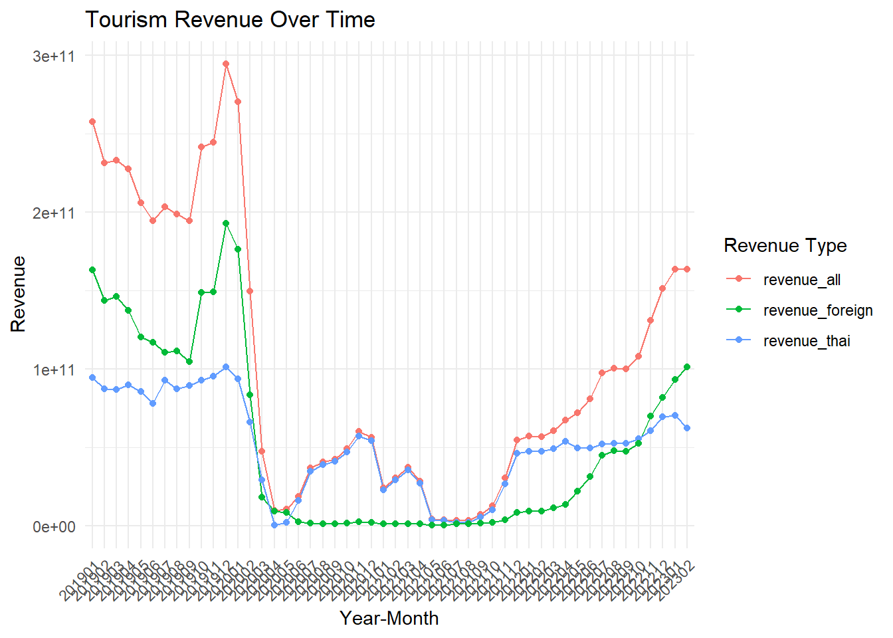
Key observations frome the above chart:
Sharp Decline in Early 2020: All revenue categories plummet in early 2020, coinciding with the onset of the COVID-19 pandemic. Foreign tourism (revenue_foreign) drops to nearly zero, while domestic revenue (revenue_thai) remains slightly above zero.
Slow Recovery Starting Mid-2021: Starting in September 2021, revenues begin to recover. Domestic revenue (revenue_thai) shows a more gradual and consistent rebound, while foreign revenue recovers at a slower pace but picks up by 2022.
Post-2021 Recovery Trends: Foreign tourism begins to recover more noticeably after 2022, with a sharp rise in revenues.
Dependence on Foreign Tourism: The gap between
revenue_allandrevenue_thaihighlights the significant contribution of foreign tourists to total tourism revenue. Pre-2020, foreign tourism was a major driver of revenue, and its slower recovery delayed overall recovery until mid-2022.
Overall, while tourism revenues have been recovering since 2021, we can see the industry was severely impacted by the pandemic, with foreign tourism showing the steepest decline and the slowest rebound. Domestic tourism played a key role in stabilizing the economy before foreign tourism recovered. Below is an illustration on Covid timeline in Thailand in 2020 for your reference.

4.1.2 Number of Tourists
Next we look at the monthly trend of spend per tourist
sf_long_tourist <- tourism %>%
group_by(year_month) |>
summarize(no_tourist_all = sum(no_tourist_all),
no_tourist_thai = sum(no_tourist_thai),
no_tourist_foreign = sum(no_tourist_foreign)) |>
pivot_longer(cols = c(no_tourist_all, no_tourist_thai, no_tourist_foreign),
names_to = "tourist_type",
values_to = "tourist")
# Create the line plot
ggplot(sf_long_tourist, aes(x = factor(year_month), y = tourist, color = tourist_type, group = tourist_type)) +
geom_line() +
geom_point() +
labs(title = "Number of Tourists Over Time",
x = "Year-Month",
y = "Tourist",
color = "Tourist Type") +
theme_minimal() +
theme(axis.text.x = element_text(angle = 45, hjust = 1))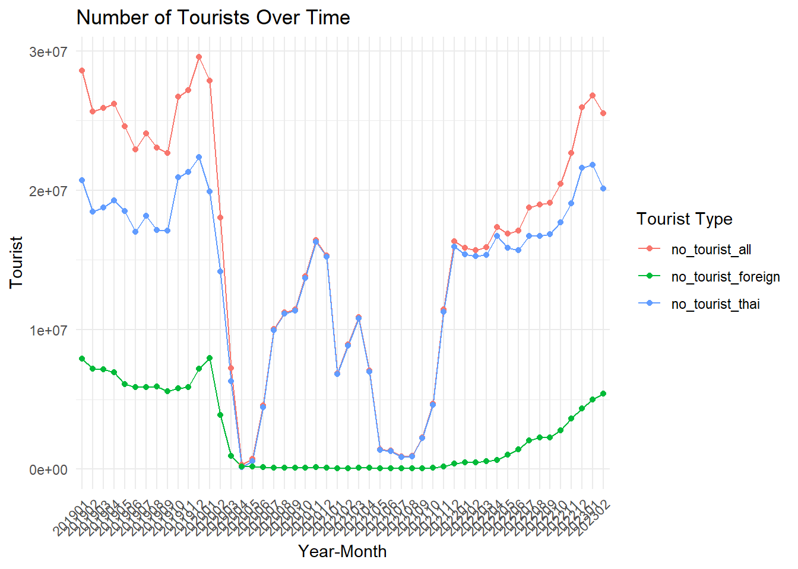
The number of tourists over time chart demonstrates similar trend to the Revenue over time chart, with a significant drop in early 2020 due to COVID pandemic, then slowly recover from Mid 2021. However, there is 1 significant difference compared to revenue contribution, where Thai tourists is the main drivers of the total number of tourist, not foreign tourists.
4.1.3 Average Ratio of Tourist Stay and Foreign to Thai tourists
Next we look at the average ratio of tourist stay and Foreign to Thai tourist over time.
sf_long_ratio <- tourism %>%
group_by(year_month) |>
summarize(ratio_tourist_stay = mean(ratio_tourist_stay),
foreign_thai_tourist = mean(foreign_thai_tourist)) |>
pivot_longer(cols = c(ratio_tourist_stay, foreign_thai_tourist),
names_to = "ratio_type",
values_to = "ratio")
# Create the line plot
ggplot(sf_long_ratio, aes(x = factor(year_month), y = ratio, color = ratio_type, group = ratio_type)) +
geom_line() +
geom_point() +
labs(title = "Tourism Ratio Over Time",
x = "Year-Month",
y = "Tourism Ratio",
color = "Ratio Type") +
theme_minimal() +
theme(axis.text.x = element_text(angle = 45, hjust = 1))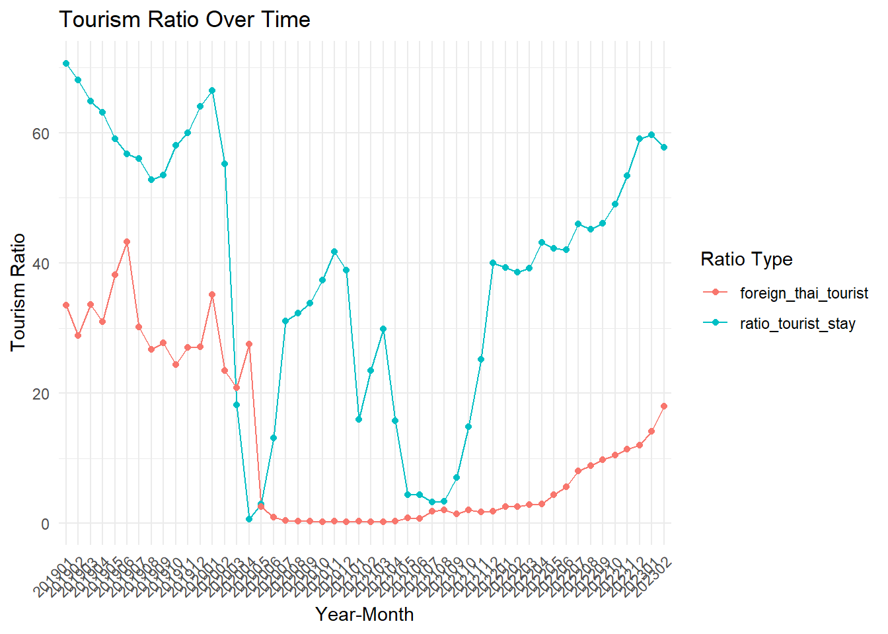
Key observations from above chart:
Ratio of foreign tourists to Thai tourists: the ratio starts at a high level in 2019, suggesting a predominance of foreign tourists during this period. The ratio drops significantly in May 2020 due to the pandemic restriction, then slowly recovers from April 2022.
The revenue per tourist in April and May 2020 are significantly higher than other months, this may be due to the pandemic travel bans and curfew happened during these 2 months, causing the number of tourists, especially foreign tourists to be very low.
Ratio of tourist stay over-night: this ratio also drops significantly in 2020, albeit the recovery speed is much faster from mid 2021, indicating the increasing contribution of Thai tourist to booked accommodation.
4.2 Tourism by Province in 2022
We will focus on 2022 as this the year the tourism industry in Thailand started to recover after the pandemic and data is available for all months.
4.2.1 Total Revenue
The below code chunks plot the full year 2022 revenue by province using ggplot.
# Filter data for the year 2022 and aggregate by province
tourism_2022 <- tourism %>%
filter(year == 2022) %>%
group_by(province_eng) %>%
summarize(total_revenue = sum(revenue_all))
# Plot a bar chart showing total revenue by province for 2022
ggplot(tourism_2022, aes(x = reorder(province_eng,total_revenue), y = total_revenue)) +
geom_bar(stat = "identity", fill = "steelblue") +
labs(title = "Total Revenue by Province in 2022",
x = "Province",
y = "Total Revenue") +
theme_minimal() +
theme(axis.text.y = element_text(angle = 0, hjust = 1)) + # Ensure province labels are readable
coord_flip()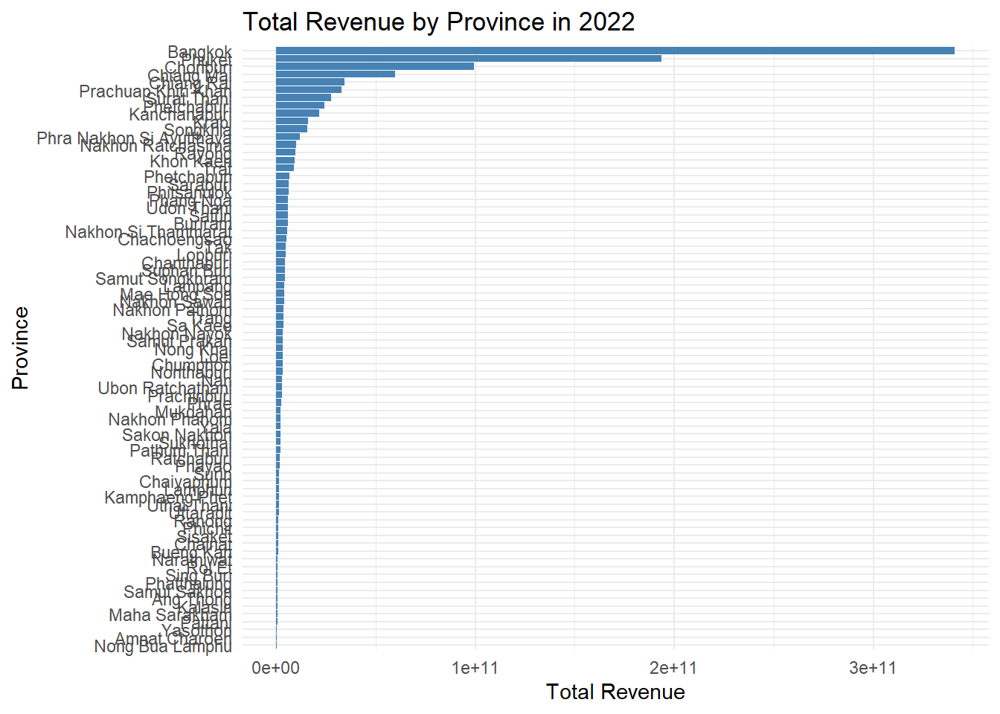
We can see the revenue distribution among Thailand’s provinces is highly skewed. The top 4 provinces with significantly higher revenue than the remaining provinces are: Bangkok, Phuket, Chonburi, Chiang Mai.
4.2.2 Number of Tourist by Province
The below code chunk plots the total number of tourists by province in Thailand in 2022.
# Filter data for the year 2022 and aggregate by province
tourist_2022 <- tourism %>%
filter(year == 2022) %>%
group_by(province_eng) %>%
summarize(total_tourist = sum(no_tourist_all))
# Plot a bar chart showing total revenue by province for 2022
ggplot(tourist_2022, aes(x = reorder(province_eng,total_tourist), y = total_tourist)) +
geom_bar(stat = "identity", fill = "steelblue") +
labs(title = "Number of Tourists by Province in 2022",
x = "Province",
y = "Number of Tourists") +
theme_minimal() +
theme(axis.text.y = element_text(angle = 0, hjust = 1)) +
coord_flip()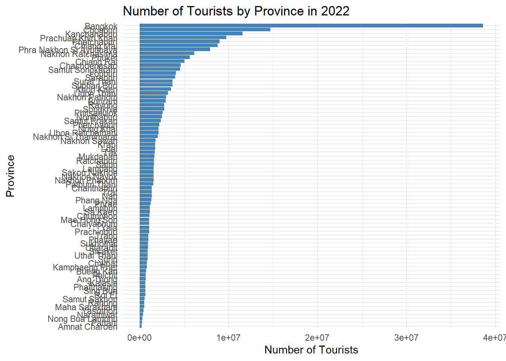
The number of tourists by province is also unevenly distributed, although less skewed than the revenue distribution. The top 4 provinces with significantly higher number of tourists compared to the remaining provinces are: Bangkok, Chonburi, Kanchanaburi, Prachuap Khiri Khan. Among the top 4 provinces with highest revenue, only Bangkok and Chonburi are also in the top 4 provinces with highest number of tourist, indicating the revenue per tourist is higher in Phuket and Chiang Mai.
4.3 Correlation Matrix
The below code chunk plots a correlation matrix across the available tourism indicators to understand the relationships between all pair of variables.
data_subset <- tourism[, c("revenue_all", "no_tourist_all", "ratio_tourist_stay","no_tourist_stay","no_tourist_thai","no_tourist_foreign","revenue_thai","revenue_foreign","revenue_per_tourist","revenue_per_thai_tourist","revenue_per_foreign_tourist","foreign_thai_tourist")]
# Compute the correlation matrix
M <- cor(data_subset, use = "complete.obs")
# Visualize the correlation matrix
corrplot(M, method = 'number',order = 'AOE', tl.cex = 0.6)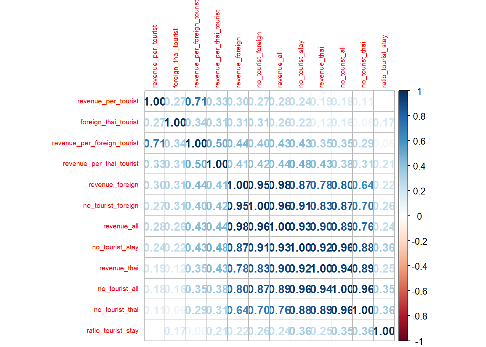
Base on the above matrix, the below variables will be excluded from further analysis due to strong correlation with the key indicators (revenue_all, no_tourist_all, ratio_tourist_stay):
no_tourist_thai and revenue_thai: high correlation (0.96 and 0.94) with no_tourist_all
no_tourist_stay: high correlation (0.96) with no_tourist_all
no_tourist_foreign and revenue_foreign: high correlation (0.96 and 0.98) with revenue_all
revenue_per_foreign_tourist: high correlation (0.71) with revenue_per_tourist
revenue_per_thai_tourist: reflect similar information to revenue_per_tourist and foreign_thai_tourist
5 Data Wrangling
Data across 2022 is aggregated using the below code chunk. 2022 is selected as this is the year the tourism economy started to recover and data is available for all months. The aggregated columns are calculated as below:
no_tourist_all,revenue_all: sum from the respective column intourismsf dataframe.avg_ratio_stay: average acrossratio_tourist_stayof the province across 12 months.revenue_per_tourist: take total revenue divided by total number of tourists.revenue_per_thai_tourist: take total revenue generated by Thai tourist divided by the number of Thai tourists.foreign_thai_tourist: take the number of foreign tourists divided by the number of Thai tourists.
tourism_2022 = tourism |>
filter(year == 2022) |>
group_by(province_eng) |>
summarize(no_tourist_all = sum(no_tourist_all),
revenue_all = sum(revenue_all),
avg_ratio_stay = mean(ratio_tourist_stay),
revenue_per_tourist = sum(revenue_all)/sum(no_tourist_all),
revenue_per_thai_tourist = sum(revenue_thai)/sum(no_tourist_thai),
foreign_thai_tourist = 100*sum(no_tourist_foreign)/sum(no_tourist_thai))The below code chunk joins thailand with tourism_2022 using left_join() to derive a tourism economy indicators layer within Thailand province boundaries for further spatial autocorrelation testing and analysis.
thailand_tourism2022 <- left_join(thailand, tourism_2022)Joining with `by = join_by(province_eng)`The below code output reveals some records are having NA values, this is due to province’s nameing between thailand and tourism sf dataframe are slightly different. The mismatch province names are filtered as below.
tourism_2022_na <- thailand_tourism2022 %>%
filter(is.na(revenue_all))
tourism_2022_naSimple feature collection with 8 features and 7 fields
Geometry type: POLYGON
Dimension: XY
Bounding box: xmin: 98.20504 ymin: 8.12658 xmax: 104.9085 ymax: 17.69221
Geodetic CRS: WGS 84
# A tibble: 8 × 8
province_eng geometry no_tourist_all revenue_all
* <chr> <POLYGON [°]> <dbl> <dbl>
1 Lop Buri ((101.3453 15.75254, 101.3457 15.… NA NA
2 Chai Nat ((100.1199 15.41243, 100.121 15.4… NA NA
3 Chon Buri ((101.1435 13.58932, 101.1444 13.… NA NA
4 Prachin Buri ((101.4881 14.45835, 101.4884 14.… NA NA
5 Buri Ram ((102.9303 15.79514, 102.9303 15.… NA NA
6 Si Sa Ket ((104.1052 15.56826, 104.1053 15.… NA NA
7 Nong Bua Lam Phu ((102.2866 17.69207, 102.2867 17.… NA NA
8 Phangnga ((98.40774 9.347689, 98.40777 9.3… NA NA
# ℹ 4 more variables: avg_ratio_stay <dbl>, revenue_per_tourist <dbl>,
# revenue_per_thai_tourist <dbl>, foreign_thai_tourist <dbl>We replace the province name in thailand with the same name in tourism sf dataframe using below code chunk.
thailand <- thailand %>%
mutate(province_eng = ifelse(province_eng == "Si Sa Ket", "Sisaket",
ifelse(province_eng == "Buri Ram", "Buriram",
ifelse(province_eng == "Lop Buri", "Lopburi",
ifelse(province_eng == "Chai Nat", "Chainat",
ifelse(province_eng == "Chon Buri", "Chonburi",
ifelse(province_eng == "Prachin Buri", "Prachinburi",
ifelse(province_eng == "Nong Bua Lam Phu", "Nong Bua Lamphu",
ifelse(province_eng == "Phangnga", "Phang Nga",
province_eng)))))))))The below code chunk performs the join again and check for records with NA value.
thailand_tourism2022 <- left_join(thailand, tourism_2022)Joining with `by = join_by(province_eng)`# Check for records with NA value
tourism_2022_na <- thailand_tourism2022 %>%
filter(is.na(revenue_all))
tourism_2022_naSimple feature collection with 0 features and 7 fields
Bounding box: xmin: NA ymin: NA xmax: NA ymax: NA
Geodetic CRS: WGS 84
# A tibble: 0 × 8
# ℹ 8 variables: province_eng <chr>, geometry <GEOMETRY [°]>,
# no_tourist_all <dbl>, revenue_all <dbl>, avg_ratio_stay <dbl>,
# revenue_per_tourist <dbl>, revenue_per_thai_tourist <dbl>,
# foreign_thai_tourist <dbl>There are no records with NA value. All the provinces are mapped properly between the 2 dataframes now.
6 Geovisualization of Tourism Economy Key Indicators
Next tmap is used to create choropleth maps of the 5 variables selected as key indicators of Thailand tourism economy basis the above EDGE: revenue_all, no_tourist_all, avg_ratio_stay, revenue_per_tourist, foreign_thai_tourist.
no_tourist <- tm_shape(thailand_tourism2022) +
tm_fill("no_tourist_all",
n = 5,
style = "quantile") +
tm_borders(alpha = 0.5) +
tm_layout(main.title = "Number of Tourists by Province Map",
legend.position = c("left","bottom"))
revenue <- tm_shape(thailand_tourism2022) +
tm_fill("revenue_all",
n = 5,
style = "quantile") +
tm_borders(alpha = 0.5) +
tm_layout(main.title = "Revenue by Province Map",
legend.position = c("left","bottom"))
ratio_stay <- tm_shape(thailand_tourism2022) +
tm_fill("avg_ratio_stay",
n = 5,
style = "quantile") +
tm_borders(alpha = 0.5) +
tm_layout(main.title = "Average Ratio of Tourist Stay Map",
legend.position = c("left","bottom"))
rev_per_tourist <- tm_shape(thailand_tourism2022) +
tm_fill("revenue_per_tourist",
n = 5,
style = "quantile") +
tm_borders(alpha = 0.5) +
tm_layout(main.title = "Revenue per Tourist by Province Map")
foreign_thai_tourist <- tm_shape(thailand_tourism2022) +
tm_fill("foreign_thai_tourist",
n = 5,
style = "quantile") +
tm_borders(alpha = 0.5) +
tm_layout(main.title = "Foreign to Thai Tourist Ratio by Province Map")tmap_arrange(no_tourist, revenue, ratio_stay,
ncol=2, nrow = 2)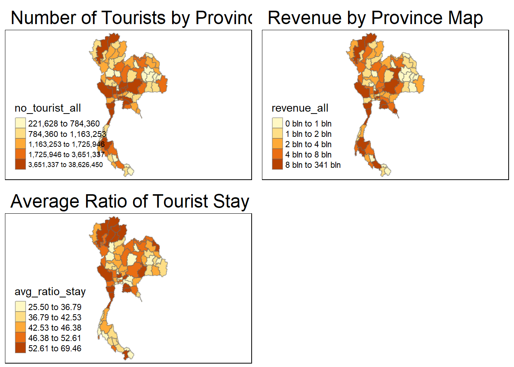
Key observations from the above choropleth maps:
The maps highlight regional disparities in tourism activity across Thailand.
The central and southern regions, particularly around Bangkok, are the dominant tourist destinations in terms of both visitor numbers and revenue generation.
The northern and northeastern regions, while having lower tourist numbers and revenue, attract visitors who tend to stay for longer durations.
Next we plot the ratio of foreign to Thai tourist and Revenue per tourist using tmap_arrange as below.
tmap_arrange(foreign_thai_tourist, rev_per_tourist,
ncol=2)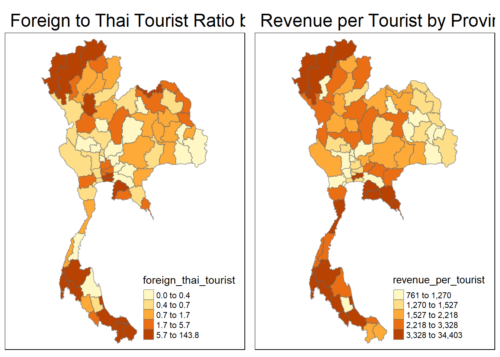
The maps highlight the regional disparities in tourism activity and the composition of tourist clientele in Thailand.
The central and southern regions, particularly around Bangkok, are the dominant tourist destinations in terms of both foreign tourist arrivals and revenue per tourist.
The northern and northeastern regions, while attracting fewer foreign tourists, may have a higher proportion of domestic tourists and potentially lower revenue per tourist.
Coastal areas, especially in the south, often exhibit higher foreign tourist ratios due to their popularity among foreigners.
7 Global Measures of Spatial Association
In this section, Global Moran’s I permutation test using Monte Carlo simulation is used to confirm if the variables distribution are statistically spatially dependent.
First we derive the neighbors and spatial weights using adaptive distance with 6 neighbors. The below code chunk uses st_knn() and st_weights() of sfdep package to carry out the calculation. Key arguments of these functions:
st_knn(): k: define the number of nearest neighors to be returned.st_weights():nb: A neighbor list created by
st_neighbors().style: Specifies the weighting style, with “W” (row standardized weights) as the default. Other options include “B” (binary coding), “C” (globally standardized), “U” (C divided by the number of neighbors), and “S” (variance-stabilizing scheme by Tiefelsdorf et al., 1999).
allow_zero: If TRUE, assigns zero as the lagged value to zones without neighbors.
wm_q <- thailand_tourism2022 %>%
mutate(nb = st_knn(geometry, k = 6),
wt = st_weights(nb,
style = "W", allow_zero = TRUE),
.before = 1) Next Global Moran’s I permutation test is computed for the key tourism indicators with the below details:
Null hypothesis: the observed spatial pattern resemble random distribution. The value at one location does not depend on values of its neighbors.
Alpha value = 0.05. We reject the null hypothesis if p-value is smaller than 0.05.
We set the seed before computation to ensure reproducibility of the result.
set.seed(1234)
global_moran_perm(wm_q$no_tourist_all,
wm_q$nb,
wm_q$wt,
nsim = 99)
Monte-Carlo simulation of Moran I
data: x
weights: listw
number of simulations + 1: 100
statistic = 0.074045, observed rank = 98, p-value = 0.04
alternative hypothesis: two.sidedThe statistical output shows a p-value smaller than 0.05, providing enough evidence to reject the null hypothesis that the spatial distribution of Number of tourist is random. Since the Moran’s I statistic is slightly greater than 0, we can infer that the spatial distribution shows sign of clustering.
set.seed(1234)
global_moran_perm(wm_q$revenue_all,
wm_q$nb,
wm_q$wt,
nsim = 99)
Monte-Carlo simulation of Moran I
data: x
weights: listw
number of simulations + 1: 100
statistic = 0.0028645, observed rank = 73, p-value = 0.54
alternative hypothesis: two.sidedAs p-value is larger than 0.05, we cannot reject the null hypothesis that the spatial distribution of total revenue resemble random distribution.
set.seed(1234)
global_moran_perm(wm_q$avg_ratio_stay,
wm_q$nb,
wm_q$wt,
nsim = 99)
Monte-Carlo simulation of Moran I
data: x
weights: listw
number of simulations + 1: 100
statistic = 0.17507, observed rank = 100, p-value < 2.2e-16
alternative hypothesis: two.sidedAs p-value is smaller than 0.05, we can reject the null hypothesis that the spatial distribution of Average ratio of tourist stay resembles random distribution. Since the Moran’s I statistic is greater than 0, we can infer that the spatial distribution shows sign of clustering.
set.seed(1234)
global_moran_perm(wm_q$revenue_per_tourist,
wm_q$nb,
wm_q$wt,
nsim = 99)
Monte-Carlo simulation of Moran I
data: x
weights: listw
number of simulations + 1: 100
statistic = 0.16271, observed rank = 100, p-value < 2.2e-16
alternative hypothesis: two.sidedAs p-value is smaller than 0.05, we can reject the null hypothesis that the spatial distribution of Revenue per tourist resembles random distribution. Since the Moran’s I statistic is greater than 0, we can infer that the spatial distribution shows sign of clustering.
set.seed(1234)
global_moran_perm(wm_q$foreign_thai_tourist,
wm_q$nb,
wm_q$wt,
nsim = 99)
Monte-Carlo simulation of Moran I
data: x
weights: listw
number of simulations + 1: 100
statistic = 0.15238, observed rank = 99, p-value = 0.02
alternative hypothesis: two.sidedAs p-value is smaller than 0.05, we can reject the null hypothesis that the spatial distribution of Ratio of Foreign to Thai tourist resembles random distribution. Since the Moran’s I statistic is greater than 0, we can infer that the spatial distribution shows sign of clustering.
Except for Revenue from all tourists (revenue_all) where the Global Moran’s I statistic was not significant, for the remaining 4 variables (Number of All Tourists, Average ratio of tourist stay, Revenue per tourist and Ratio of Foreign to Thai tourist), the results were significant and indicate signs of clustering as the statistic value is larger than 0.
8 Local Indicators of Spatial Association (LISA)
Local Indicators of Spatial Association (LISA) are statistics that assess the presence of clusters or outliers in the spatial distribution of a variable. For example, in analyzing Number of tourist in across Thailand’s provinces, local clusters indicate that some provinces have higher or lower Number of tourists than expected by chance, meaning their values deviate from a random spatial distribution.
A LISA map is a categorical map highlighting outliers and clusters. Outliers are classified as High-Low and Low-High, while clusters are categorized as High-High and Low-Low. The detail of each classification is as below:
Low-Low: Low value of the variable are clustered in areas with other low values.
High-Low: High value of the variable is outlier in areas with other low values.
Low-High: Low value of the variable is outlier in areas with other high values.
High-High: High value of the variable is clustered in areas with other high values.
The LISA plots the local Moran’s I of geographical areas with statistically significant p-values to interpret spatial patterns.
In this section, we examine the LISA map of Thailand’s key tourism indicators.
8.1 Total Revenue
First we compute the local Moran’s I of revenue_all at province level using local_moran() as in below code chunk.
set.seed(1234)
lisa_revenue_all <- wm_q %>%
mutate(local_moran = local_moran(
revenue_all, nb, wt, nsim = 99),
.before = 1) %>%
unnest(local_moran)The below code chunk plots the LISA map of revenue_all using the classification from the mean LISA categories.
lisa_sig_revenue_all <- lisa_revenue_all %>%
filter(p_ii_sim < 0.05)
tmap_mode("plot")
tm_shape(lisa_revenue_all) +
tm_polygons() +
tm_borders(alpha = 0.5) +
tm_shape(lisa_sig_revenue_all) +
tm_fill("mean") +
tm_borders(alpha = 0.4)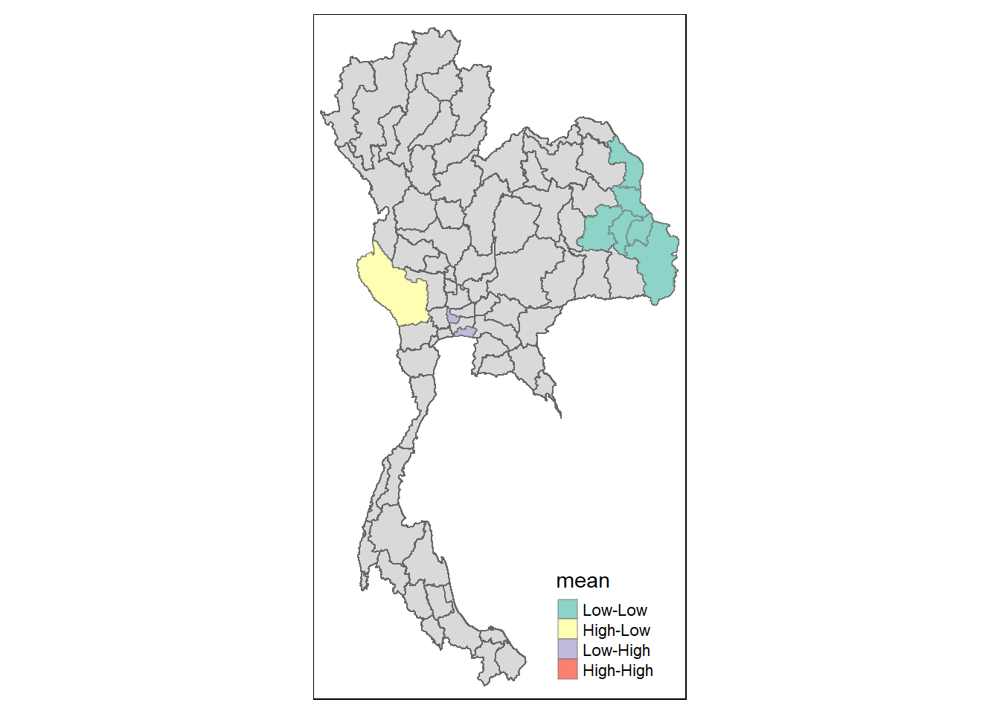
Key observations from the LISA map:
There are clusters with Low-Low values in the North Easten region of Thailand, indicating low revenue from tourism in this area.
There are 2 Low-High clusters adjacent to Bangkok, this indicate the tourism revenue of the area around Bangkok is not evenly distributed.
There is 1 High-Low cluster at Kanchanaburi province, indicating the tourism revenue in this area is significantly higher than the surrounding neighbors.
8.2 Number of Tourists
First we compute the local Moran’s I of no_tourist_all at province level using local_moran() as in below code chunk.
set.seed(1234)
lisa_no_tourist_all <- wm_q %>%
mutate(local_moran = local_moran(
no_tourist_all, nb, wt, nsim = 99),
.before = 1) %>%
unnest(local_moran)The below code chunk plots the LISA map of no_tourist_all using the classification from the mean LISA categories.
lisa_sig_no_tourist_all <- lisa_no_tourist_all %>%
filter(p_ii_sim < 0.05)
tmap_mode("plot")
tm_shape(lisa_no_tourist_all) +
tm_polygons() +
tm_borders(alpha = 0.5) +
tm_shape(lisa_sig_no_tourist_all) +
tm_fill("mean") +
tm_borders(alpha = 0.4)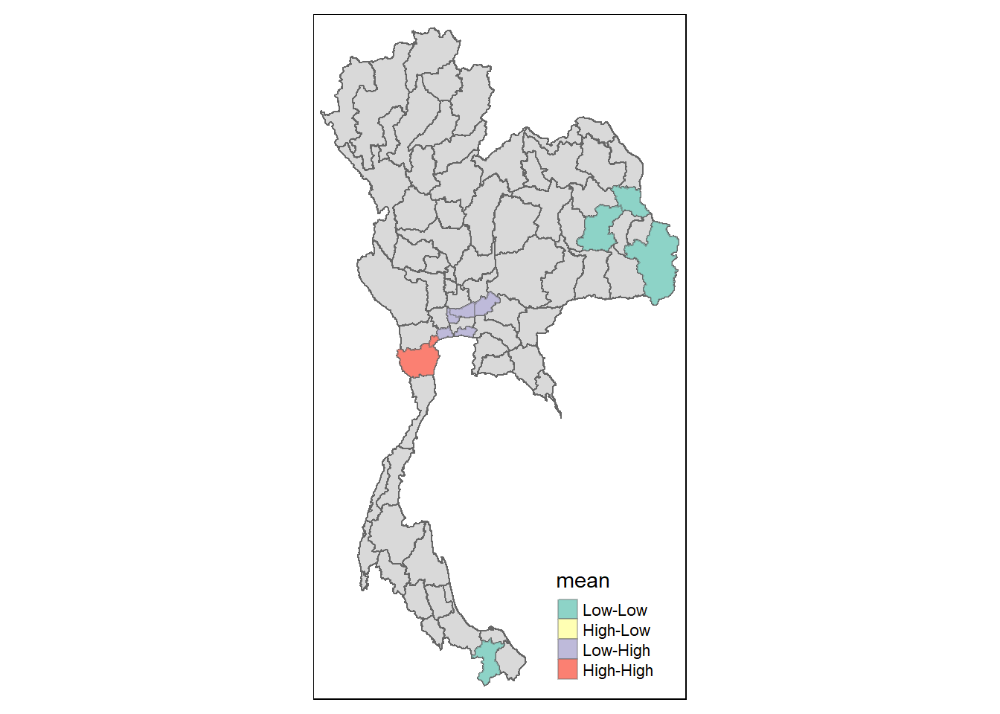
Key observations from above LISA map:
Similar to the LISA map on
revenue_all, there are Low-Low clusters in the North Easter region and Low-High clusters around Bangkok.There is 1 High-High cluster at Phetchaburi province, suggesting this can be a popular tourist destination compared to surrounding provinces.
8.3 Average Ratio Tourist Stay
First we compute the local Moran’s I of avg_ratio_stay at province level using local_moran() as in below code chunk.
set.seed(1234)
lisa_avg_ratio_stay <- wm_q %>%
mutate(local_moran = local_moran(
avg_ratio_stay, nb, wt, nsim = 99),
.before = 1) %>%
unnest(local_moran)The below code chunk plots the LISA map of avg_ratio_stay using the classification from the mean LISA categories.
lisa_sig_avg_ratio_stay <- lisa_avg_ratio_stay %>%
filter(p_ii_sim < 0.05)
tmap_mode("plot")
tm_shape(lisa_avg_ratio_stay) +
tm_polygons() +
tm_borders(alpha = 0.5) +
tm_shape(lisa_sig_avg_ratio_stay) +
tm_fill("mean") +
tm_borders(alpha = 0.4)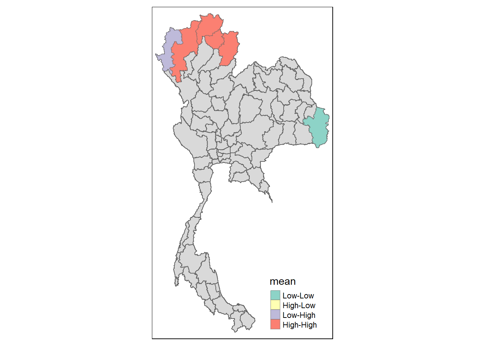
Key observations from above LISA map:
There are High-High clusters in the North region, suggesting tourists tend to stay overnight in this area.
There is 1 Low-High cluster also in the North region, suggesting tourists are less likely to stay overnight in this province, they may prefer to stay in the neighboring High-High provinces.
8.4 Foreign to Thai tourist
First we compute the local Moran’s I of foreign_thai_tourist at province level using local_moran() as in below code chunk.
set.seed(1234)
lisa_foreign_thai_tourist <- wm_q %>%
mutate(local_moran = local_moran(
foreign_thai_tourist, nb, wt, nsim = 99),
.before = 1) %>%
unnest(local_moran)The below code chunk plots the LISA map of foreign_thai_tourist using the classification from the mean LISA categories.
lisa_sig_foreign_thai_tourist <- lisa_foreign_thai_tourist %>%
filter(p_ii_sim < 0.05)
tmap_mode("plot")
tm_shape(lisa_foreign_thai_tourist) +
tm_polygons() +
tm_borders(alpha = 0.5) +
tm_shape(lisa_sig_foreign_thai_tourist) +
tm_fill("mean") +
tm_borders(alpha = 0.4)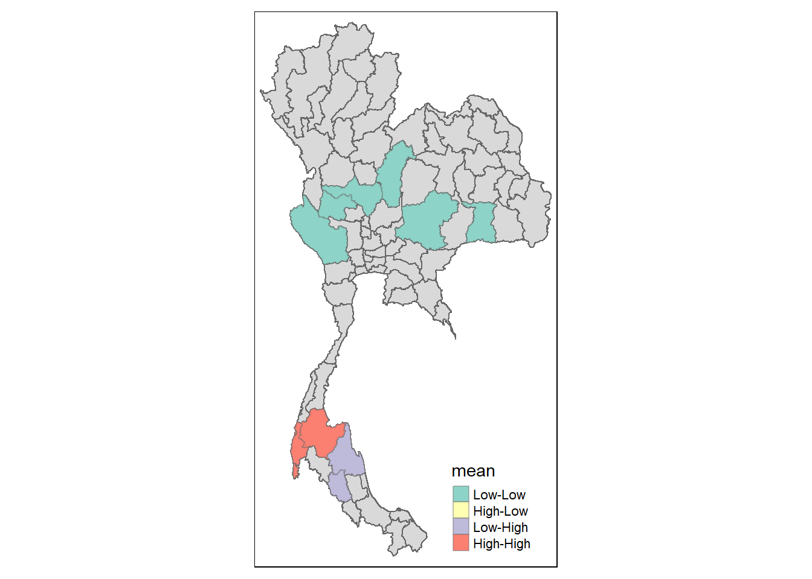
Key observations from above LISA map:
There are Low-Low clusters in the Central region, suggesting these provinces are less popular to foreign visitors.
There are High-High clusters in the Coastal region at Phuket,
Phang Nga and Surat Thani provinces. These are well-known destination for foreign visitors.
8.5 Revenue per tourist
First we compute the local Moran’s I of revenue_per_tourist at province level using local_moran() as in below code chunk.
set.seed(1234)
lisa_revenue_per_tourist <- wm_q %>%
mutate(local_moran = local_moran(
revenue_per_tourist, nb, wt, nsim = 99),
.before = 1) %>%
unnest(local_moran)The below code chunk plots the LISA map of revenue_per_tourist using the classification from the mean LISA categories.
lisa_sig_revenue_per_tourist <- lisa_revenue_per_tourist %>%
filter(p_ii_sim < 0.05)
tmap_mode("plot")
tm_shape(lisa_revenue_per_tourist) +
tm_polygons() +
tm_borders(alpha = 0.5) +
tm_shape(lisa_sig_revenue_per_tourist) +
tm_fill("mean") +
tm_borders(alpha = 0.4)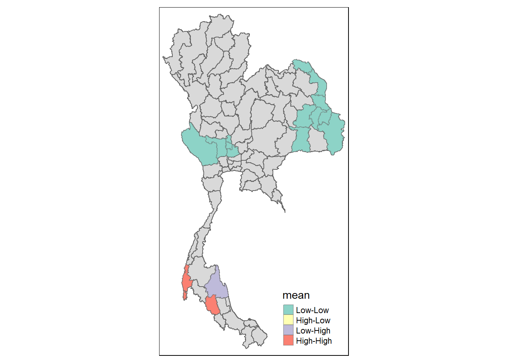
Key observations from above LISA map:
There are Low-Low clusters in the North East and Central regions, suggesting the revenue per tourist is lower in the provinces.
There are High-High clusters in Phukey and Phang Nga province. As these areas are popular to foreign visitors (also High-High cluster on Foreign to Thai tourists ratio), suggesting foreign visitors tend to spend more on their visits.
9 Emerging Hot Spot Analysis (EHSA)
Emerging Hot Spot Analysis (EHSA) is a spatio-temporal method for tracking the evolution of hot and cold spots over time. It involves four key steps:
Building a space-time cube
Calculating the Getis-Ord local Gi* statistic with FDR correction for each bin
Evaluating the cold and hot spot trends using the Mann-Kendall test
Categorizing each location based on its trend z-score and p-value, as well as the hot spot z-score and p-value for each bin.
Below are the details of each hot spot and cold spot trend as reference from Prof KAM Tin Seong Lesson 5: Global and Local Measures of Spatial Association.
| Pattern Name | Definition |
|---|---|
| No pattern detected | Does not fall into any of the hot or cold spot patterns defined below. |
| New Hot Spot | A location that is a statistically significant hot spot for the final time step and has never been a statistically significant hot spot before. |
| Consecutive Hot Spot | A location with a single uninterrupted run of at least two statistically significant hot spot bins in the final time-step intervals. The location has never been a statistically significant hot spot prior to the final hot spot run and less than 90 percent of all bins are statistically significant hot spots. |
| Intensifying Hot Spot | A location that has been a statistically significant hot spot for 90 percent of the time-step intervals, including the final time step. In addition, the intensity of clustering of high counts in each time step is increasing overall and that increase is statistically significant. |
| Persistent Hot Spot | A location that has been a statistically significant hot spot for 90 percent of the time-step intervals with no discernible trend in the intensity of clustering over time. |
| Diminishing Hot Spot | A location that has been a statistically significant hot spot for 90 percent of the time-step intervals, including the final time step. In addition, the intensity of clustering in each time step is decreasing overall and that decrease is statistically significant. |
| Sporadic Hot Spot | A statistically significant hot spot for the final time-step interval with a history of also being an on-again and off-again hot spot. Less than 90 percent of the time-step intervals have been statistically significant hot spots and none of the time-step intervals have been statistically significant cold spots. |
| Oscillating Hot Spot | A statistically significant hot spot for the final time-step interval that has a history of also being a statistically significant cold spot during a prior time step. Less than 90 percent of the time-step intervals have been statistically significant hot spots. |
| Historical Hot Spot | The most recent time period is not hot, but at least 90 percent of the time-step intervals have been statistically significant hot spots. |
| Pattern Name | Definition |
|---|---|
| New Cold Spot | A location that is a statistically significant cold spot for the final time step and has never been a statistically significant cold spot before. |
| Consecutive Cold Spot | A location with a single uninterrupted run of at least two statistically significant cold spot bins in the final time-step intervals. The location has never been a statistically significant cold spot prior to the final cold spot run and less than 90 percent of all bins are statistically significant cold spots. |
| Intensifying Cold Spot | A location that has been a statistically significant cold spot for 90 percent of the time-step intervals, including the final time step. In addition, the intensity of clustering of low counts in each time step is increasing overall and that increase is statistically significant. |
| Persistent Cold Spot | A location that has been a statistically significant cold spot for 90 percent of the time-step intervals with no discernible trend in the intensity of clustering of counts over time. |
| Diminishing Cold Spot | A location that has been a statistically significant cold spot for 90 percent of the time-step intervals, including the final time step. In addition, the intensity of clustering of low counts in each time step is decreasing overall and that decrease is statistically significant. |
| Sporadic Cold Spot | A statistically significant cold spot for the final time-step interval with a history of also being an on-again and off-again cold spot. Less than 90 percent of the time-step intervals have been statistically significant cold spots and none of the time-step intervals have been statistically significant hot spots. |
| Oscillating Cold Spot | A statistically significant cold spot for the final time-step interval that has a history of also being a statistically significant hot spot during a prior time step. Less than 90 percent of the time-step intervals have been statistically significant cold spots. |
| Historical Cold Spot | The most recent time period is not cold, but at least 90 percent of the time-step intervals have been statistically significant cold spots. |
9.1 Create a Time Series Cube
The code chunk below uses spacetime() of sfdep to create an spatio-temporal cube from tourism and thailand dataframe. The .loc_col and .time_col arguments are used to define the location and time period column from the relevant dataset.
thailand_st = spacetime(tourism, thailand,
.loc_col = "province_eng",
.time_col = "year_month")Next is_spacetime_cube() of sfdep package is used to verify if the conversion is successful. The output is TRUE meaning thailand_st is already a spatio-temporal cube.
is_spacetime_cube(thailand_st)[1] TRUE9.2 Perform EHSA
First we identify the neighbors and calculate the inverse distance weight using below code chunk.
thailand_nb <- thailand_st %>%
activate("geometry") %>%
mutate(nb = include_self(
st_knn(geometry, k=6)),
wt = st_inverse_distance(nb,
geometry,
scale = 1,
alpha = 1),
.before = 1) %>%
set_nbs("nb") %>%
set_wts("wt")We perform EHSA using the emerging_hotspot_analysis() function from sfdep. Emerging Hot Spot Analysis detects trends in spatial clustering over time by combining the Getis-Ord Gi* statistic with the Mann-Kendall trend test to identify temporal patterns associated with local clustering of hot and cold spots. The function requires a spacetime object (thailand_st) and the variable name for the .var argument. The k argument sets the number of time lags (default is 1), and nsim specifies the number of simulations.
9.2.1 Total Revenue
set.seed(1234)
ehsa_revenue_all <- emerging_hotspot_analysis(
x = thailand_st,
.var = "revenue_all",
k = 1,
nsim = 99
)The distribution of statistically significant EHSA classes is visualized with ggplot using below code chunk.
ggplot(data = filter(ehsa_revenue_all, p_value < 0.05),
aes(x = classification)) +
geom_bar()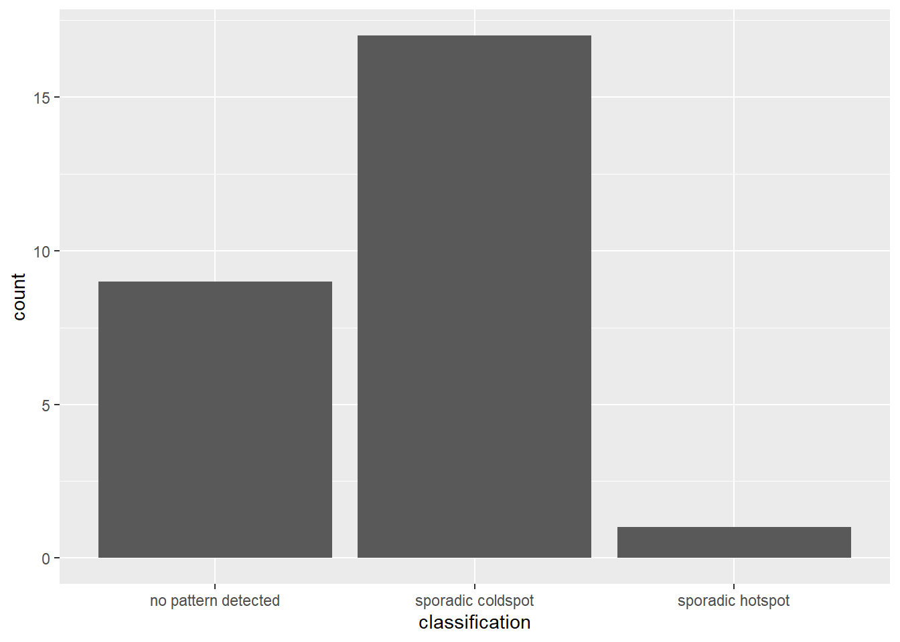
We can see majority of the areas has sporadic coldspot detected. This can be due to the impact of COVID-19 travel restriction.
Next we join thailand sf dataframe with the derived ehsa using left_join() as below.
thailand_ehsa_revenue_all <- thailand %>%
left_join(ehsa_revenue_all,
by = join_by(province_eng == location))The below code chunk uses this joined dataframe to visualize the geographic distribution of EHSA classes.
ehsa_sig_revenue_all <- thailand_ehsa_revenue_all %>%
filter(p_value < 0.05)
tmap_mode("plot")
tm_shape(thailand_ehsa_revenue_all) +
tm_polygons() +
tm_borders(alpha = 0.5) +
tm_shape(ehsa_sig_revenue_all) +
tm_fill("classification") +
tm_borders(alpha = 0.4)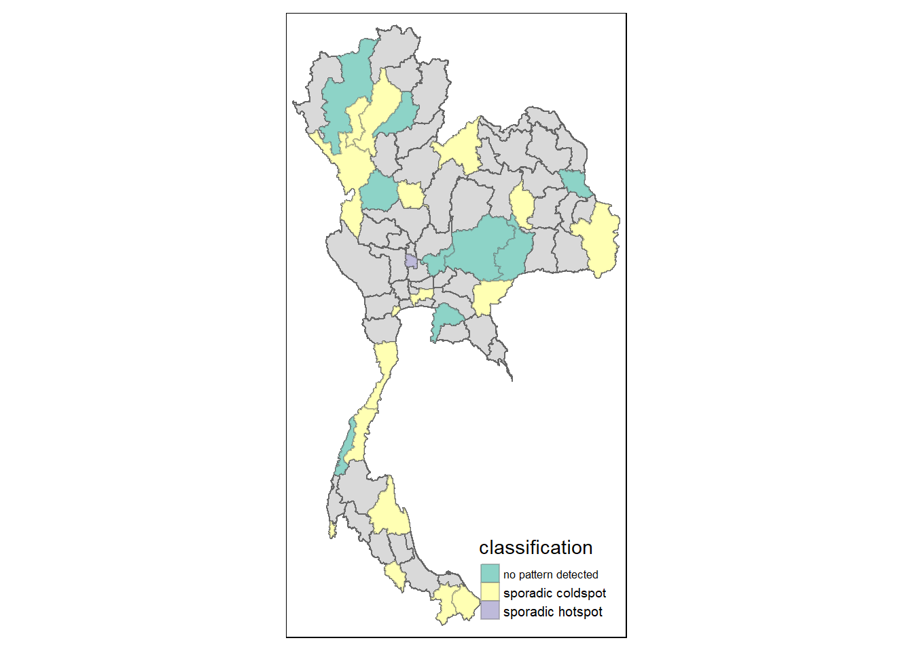
The EHSA map provides insights into the spatial distribution of emerging hotspots and coldspots for tourism revenue in Thailand provinces from January 2019 to February 2023.
Several provinces in the northern, northeastern and southern regions of Thailand are identified as sporadic coldspots. This suggests that these regions experienced some declines or stagnation in tourism revenue, in which COVID-19 travel restriction can be a major factor.
9.2.2 Number of Tourists
set.seed(1234)
ehsa_no_tourist_all <- emerging_hotspot_analysis(
x = thailand_st,
.var = "no_tourist_all",
k = 1,
nsim = 99
)The distribution of statistically significant EHSA classes is visualized with ggplot using below code chunk.
ggplot(data = filter(ehsa_no_tourist_all, p_value < 0.05),
aes(x = classification)) +
geom_bar()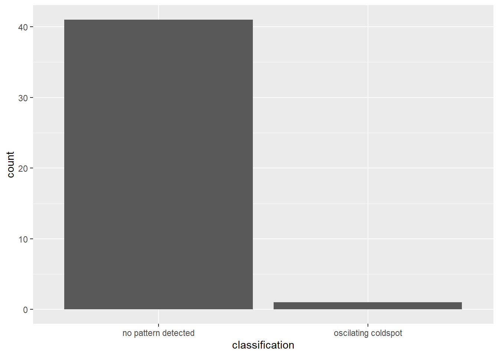
We can see most of the areas has no pattern detected.
Next we join thailand sf dataframe with the derived ehsa using left_join() as below.
thailand_ehsa_no_tourist_all <- thailand %>%
left_join(ehsa_no_tourist_all,
by = join_by(province_eng == location))The below code chunk uses this joined dataframe to visualize the geographic distribution of EHSA classes.
ehsa_sig <- thailand_ehsa_no_tourist_all %>%
filter(p_value < 0.05)
tmap_mode("plot")
tm_shape(thailand_ehsa_no_tourist_all) +
tm_polygons() +
tm_borders(alpha = 0.5) +
tm_shape(ehsa_sig) +
tm_fill("classification") +
tm_borders(alpha = 0.4)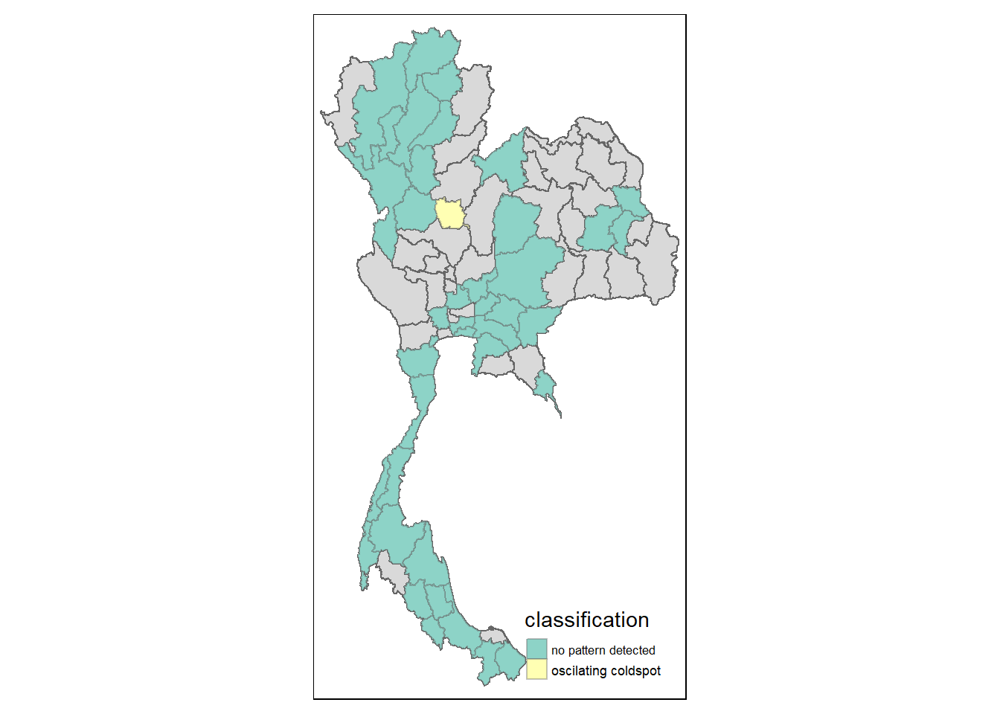
The map shows only 1 oscillating coldspot in Phichit province, suggesting this province used to be popular to tourists in the past but not as of February 2023.
9.2.3 Ratio Tourist Stay
set.seed(1234)
ehsa_ratio_tourist_stay <- emerging_hotspot_analysis(
x = thailand_st,
.var = "ratio_tourist_stay",
k = 1,
nsim = 99
)The distribution of statistically significant EHSA classes is visualized with ggplot using below code chunk.
ggplot(data = filter(ehsa_ratio_tourist_stay, p_value < 0.05),
aes(x = classification)) +
geom_bar()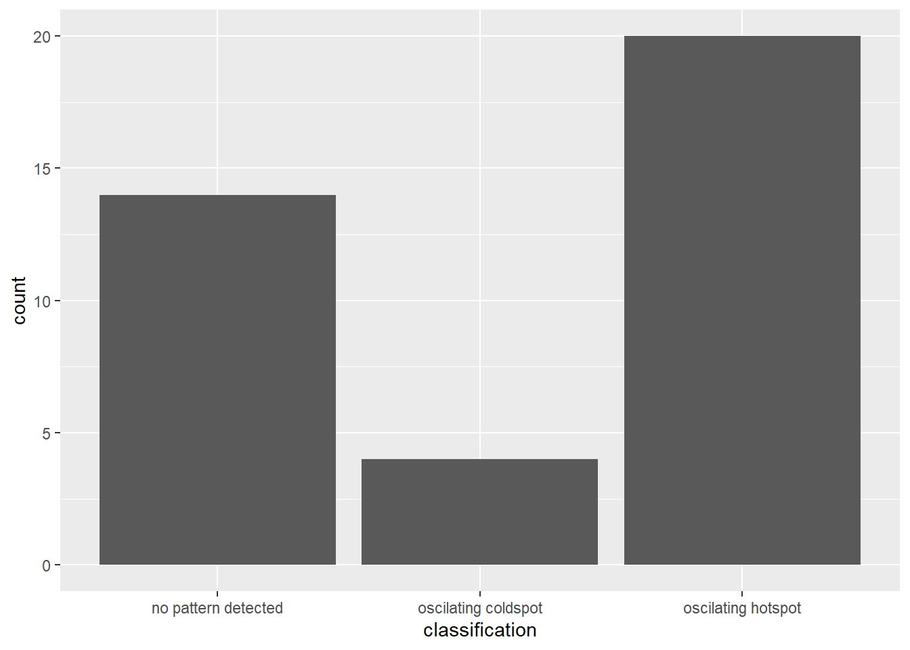
We can see majority of the areas has oscilating hotspot.
Next we join thailand sf dataframe with the derived ehsa using left_join() as below.
thailand_ehsa_ratio_tourist_stay <- thailand %>%
left_join(ehsa_ratio_tourist_stay,
by = join_by(province_eng == location))The below code chunk uses this joined dataframe to visualize the geographic distribution of EHSA classes.
ehsa_sig_ratio_tourist_stay <- thailand_ehsa_ratio_tourist_stay %>%
filter(p_value < 0.05)
tmap_mode("plot")
tm_shape(thailand_ehsa_ratio_tourist_stay) +
tm_polygons() +
tm_borders(alpha = 0.5) +
tm_shape(ehsa_sig_ratio_tourist_stay) +
tm_fill("classification") +
tm_borders(alpha = 0.4)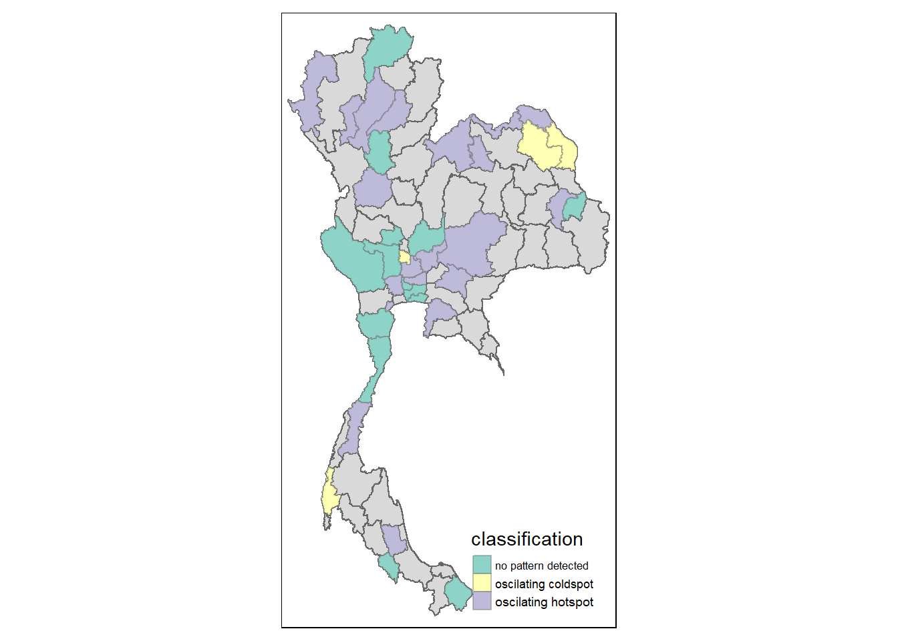
Key observations from the above EHSA map:
Several provinces in the northern and central regions are identified as oscillating hotspots. This suggests these regions experienced significant fluctuations in the ratio of tourist stay overnight during the period 2019-2023, potentially indicating emerging tourist destinations with growing popularity.
Some provinces in the northeastern region are classified as oscillating coldspots. This suggests these regions experienced fluctuations in the ratio of tourist stay overnight with an overall downward trend.
9.2.4 Foreign to Thai tourists ratio
set.seed(1234)
ehsa_foreign_thai_tourist <- emerging_hotspot_analysis(
x = thailand_st,
.var = "foreign_thai_tourist",
k = 1,
nsim = 99
)The distribution of statistically significant EHSA classes is visualized with ggplot using below code chunk.
ggplot(data = filter(ehsa_foreign_thai_tourist, p_value < 0.05),
aes(x = classification)) +
geom_bar()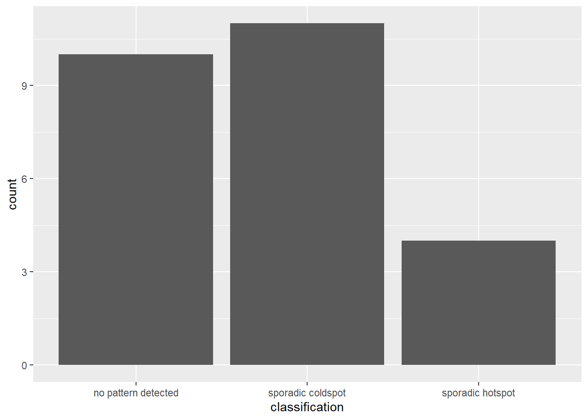
We can see majority of the areas has sporadic coldspot pattern.
Next we join thailand sf dataframe with the derived ehsa using left_join() as below.
thailand_ehsa_foreign_thai_tourist <- thailand %>%
left_join(ehsa_foreign_thai_tourist,
by = join_by(province_eng == location))The below code chunk uses this joined dataframe to visualize the geographic distribution of EHSA classes.
ehsa_sig_foreign_thai_tourist <- thailand_ehsa_foreign_thai_tourist %>%
filter(p_value < 0.05)
tmap_mode("plot")
tm_shape(thailand_ehsa_foreign_thai_tourist) +
tm_polygons() +
tm_borders(alpha = 0.5) +
tm_shape(ehsa_sig_foreign_thai_tourist) +
tm_fill("classification") +
tm_borders(alpha = 0.4)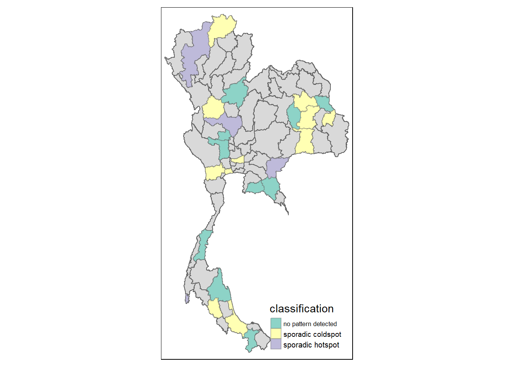
Several provinces in the central and northern regions of Thailand are identified as sporadic hotspots. This suggests significant fluctuations in the ratio of foreign to Thai tourists in these areas during the study period, potentially indicating increased popularity among foreign visitors.
Many provinces in the northern, northeastern and central region around Bangkok are classified as sporadic coldspots, indicating fluctuations in the ratio of foreign to Thai tourists with an overall downward trend.
9.2.5 Revenue per Tourist
set.seed(1234)
ehsa_revenue_per_tourist <- emerging_hotspot_analysis(
x = thailand_st,
.var = "revenue_per_tourist",
k = 1,
nsim = 99
)The distribution of statistically significant EHSA classes is visualized with ggplot using below code chunk.
ggplot(data = filter(ehsa_revenue_per_tourist, p_value < 0.05),
aes(x = classification)) +
geom_bar()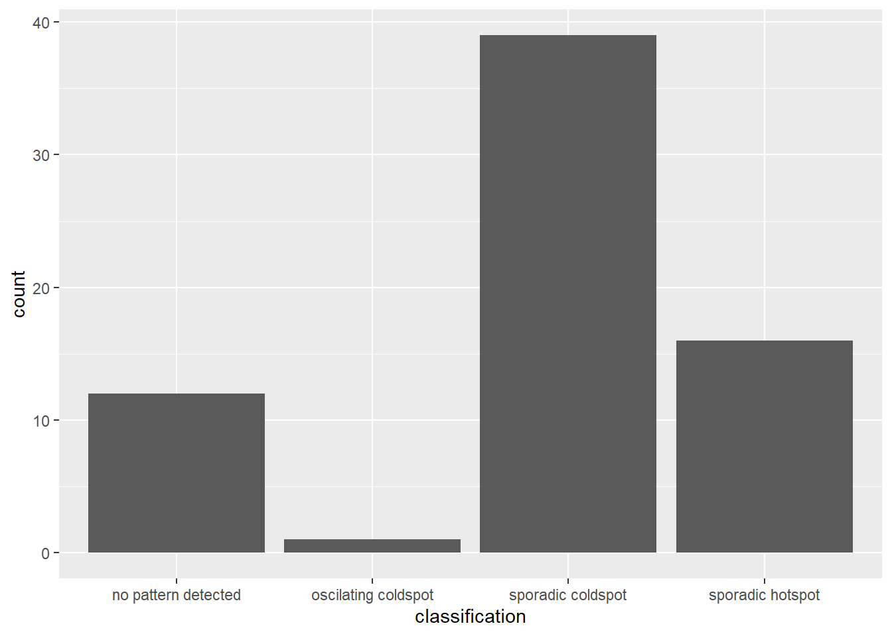
We can see majority of the areas has sporadic coldspot pattern.
Next we join thailand sf dataframe with the derived ehsa using left_join() as below.
thailand_ehsa_revenue_per_tourist <- thailand %>%
left_join(ehsa_revenue_per_tourist,
by = join_by(province_eng == location))The below code chunk uses this joined dataframe to visualize the geographic distribution of EHSA classes.
ehsa_sig_revenue_per_tourist <- thailand_ehsa_revenue_per_tourist %>%
filter(p_value < 0.05)
tmap_mode("plot")
tm_shape(thailand_ehsa_revenue_per_tourist) +
tm_polygons() +
tm_borders(alpha = 0.5) +
tm_shape(ehsa_sig_revenue_per_tourist) +
tm_fill("classification") +
tm_borders(alpha = 0.4)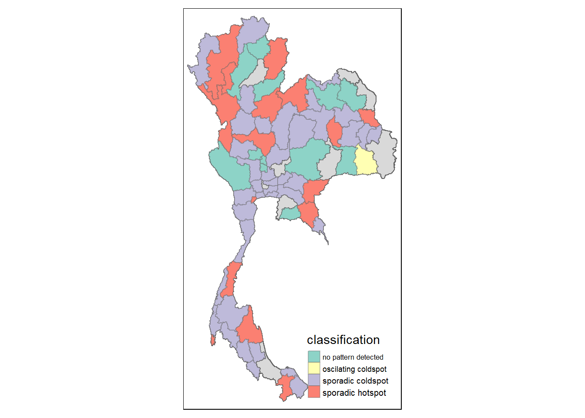
Several provinces in the central and northern regions of Thailand, are identified as sporadic hotspots. This suggests significant fluctuations in revenue per tourist during the study period, with the overall value is still high compared to the neighboring provinces.
Many provinces nationwide are classified as sporadic coldspots, indicating fluctuations in revenue per tourist with a relatively low value compared to their neighbors, may of which has sporadic hotspots pattern.
10 Conclusion
The analysis of spatial association for Thailand’s tourism economy reveals distinct patterns across global and local measures, as well as temporal trends identified through Emerging Hot Spot Analysis (EHSA) in the context of COVID-19 travel restriction. The 5 tourism key indicators considered are: Total revenue, Number of tourists, Ratio of tourists stay overnight, Ratio of foreign to Thai tourist and Revenue per tourist.
Globally, most variables—except for total revenue—demonstrate significant clustering, indicating that tourist behavior and economic impact are spatially dependent. For instance, the number of tourists, average stay ratio, revenue per tourist, and the ratio of foreign to Thai tourists all show signs of spatial clustering, suggesting that tourism dynamics are influenced by location.
Locally, the LISA maps reveal notable spatial disparities. Low-Low clusters in the northeastern region indicate low revenue and tourist activity, while Low-High clusters around Bangkok highlight uneven revenue distribution. High-High clusters, such as those in Phetchaburi and Phuket, suggest areas of concentrated tourism activity, likely driven by foreign visitors, who also tend to spend more in these high-revenue provinces.
Emerging Hot Spot Analysis (EHSA) further reinforces these spatial insights with temporal trends. Several provinces in northern, northeastern, and southern Thailand are identified as sporadic cold spots for total revenue, likely impacted by COVID-19 travel restrictions. Oscillating hotspots and cold spots in tourist stay ratios suggest regions with fluctuating popularity, especially in the northern and central provinces, where overnight stays have seen both growth and decline. Sporadic hotspots in the ratio of foreign to Thai tourists in central and northern regions signal increasing foreign interest in these areas.
In conclusion, the combined results of Global Moran’s I, LISA, and EHSA indicate both spatial clustering and temporal shifts in Thailand’s tourism economy. While some regions remain consistently popular, others face challenges or emerging trends, influenced by both domestic and international factors. The northeastern region, in particular, lags behind in terms of tourism revenue and activity, while coastal and central areas continue to thrive, especially in attracting foreign tourists.